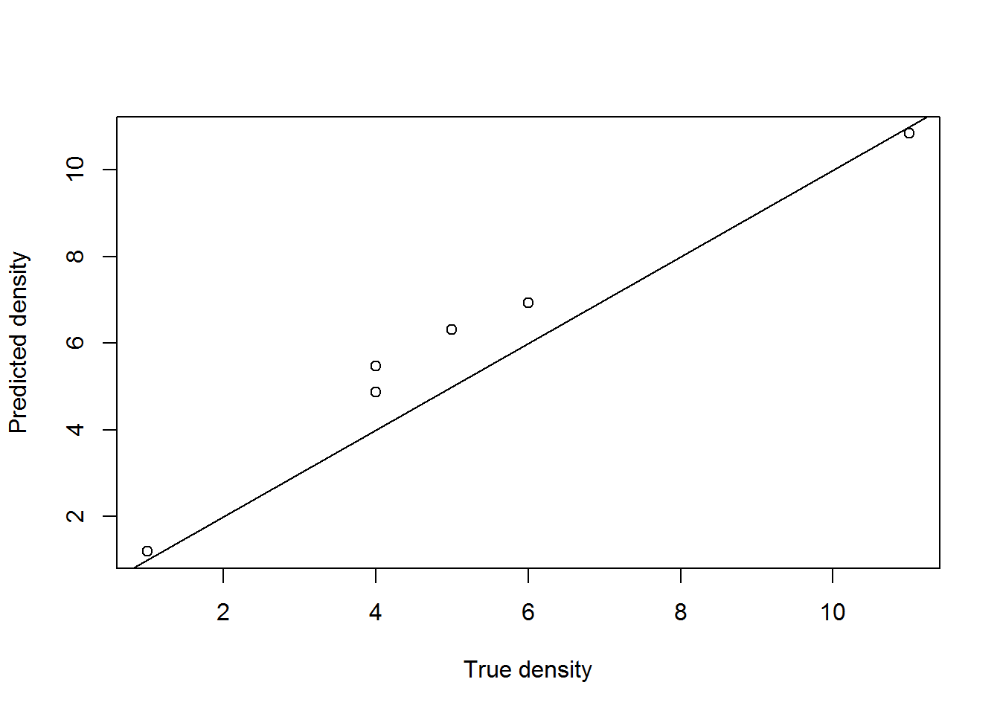
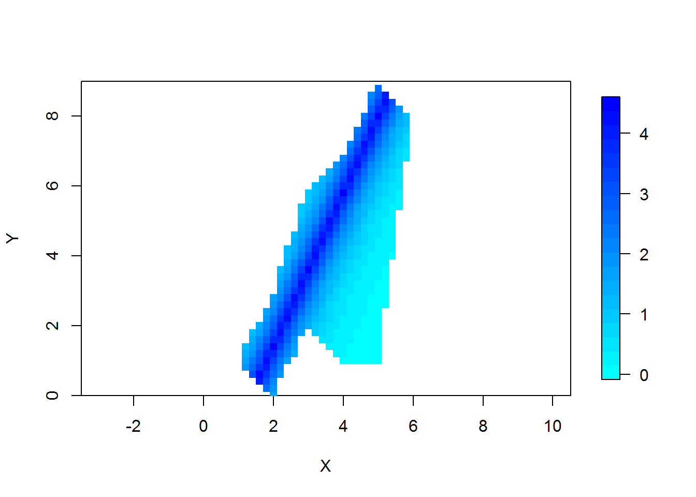
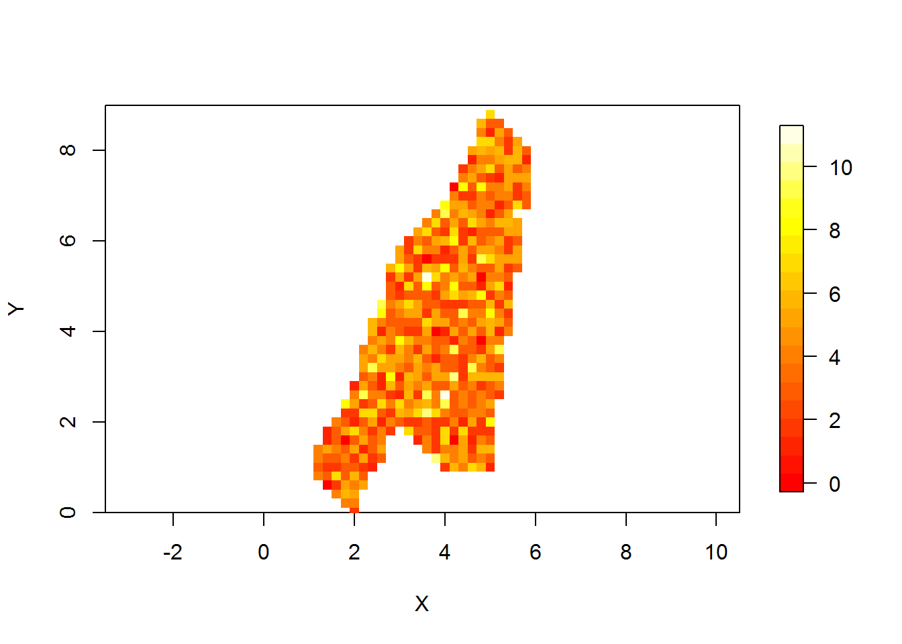
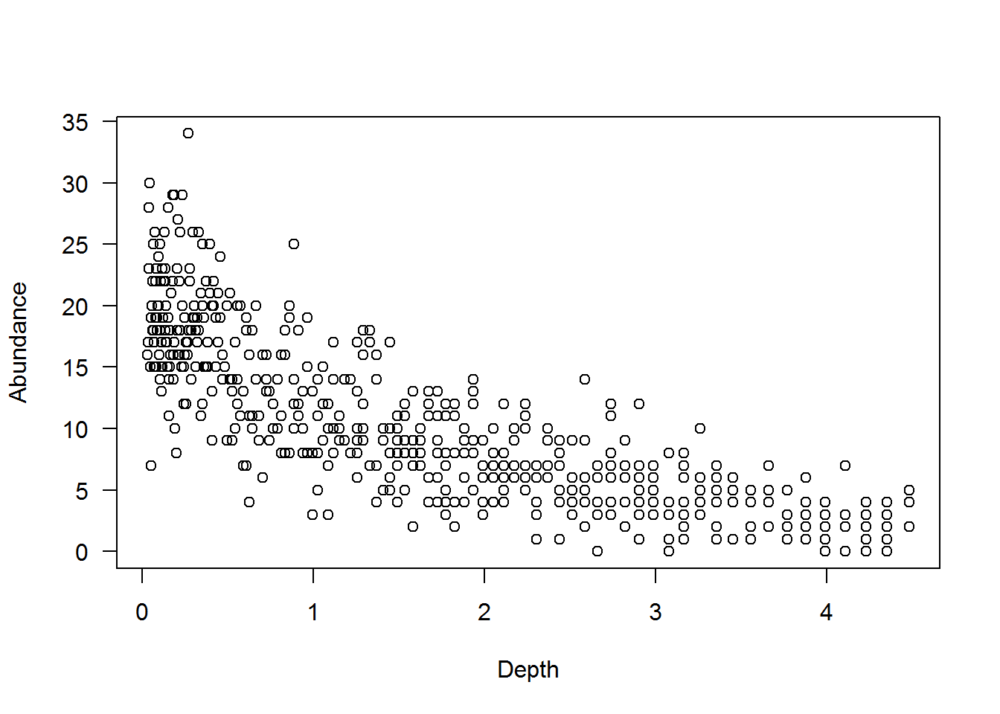
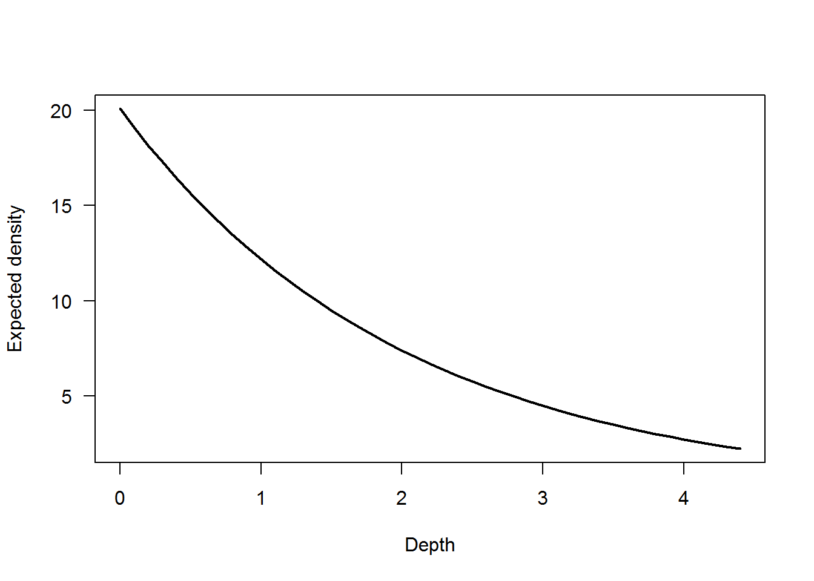
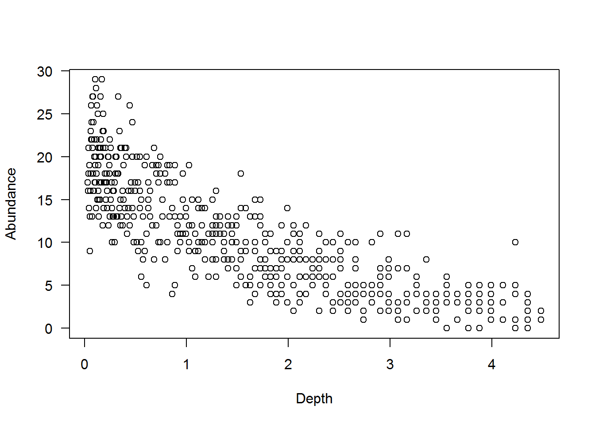
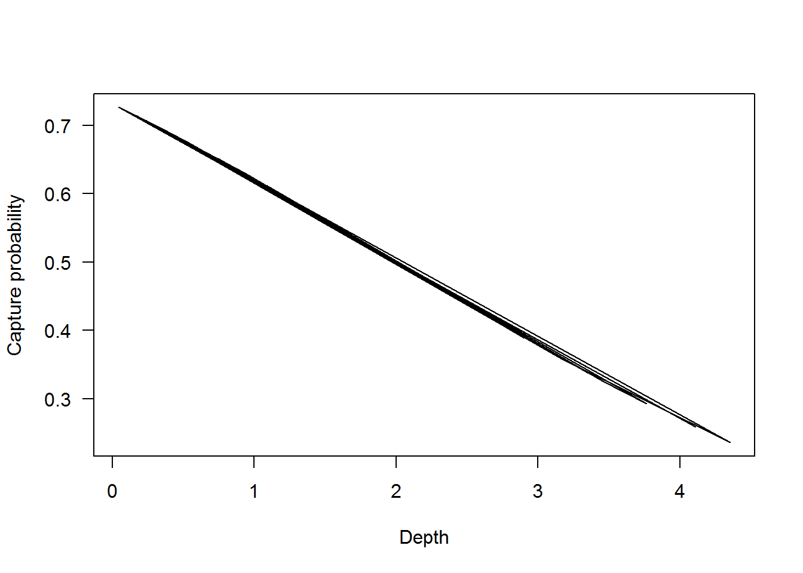
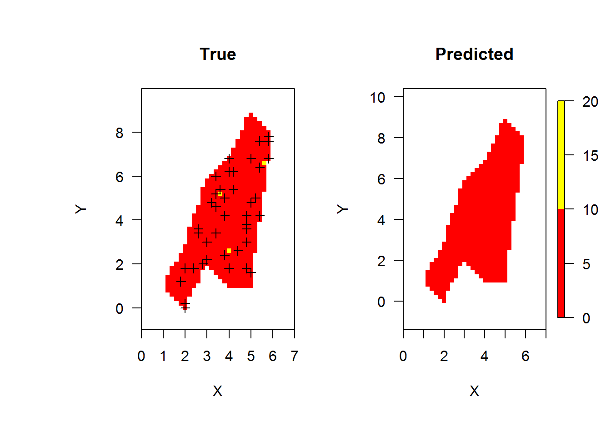

Class 18: Estimating abundance using N-Mixture models
1 Class preliminaries
- Supplemental background reading for next class(es):
- Conroy and Peterson Chapter 6 and 7.
- Powell and Gale Chapter 17.
- Assignment due: None
- Class project:
- Be developing your decision model
- Final exam period-April 28th at 3pm.
- Link to class recording YouTube
- Today’s R script Class-18.R
1.1 Class overview & objectives
- Estimating abundance using unmarked animals: N-Mixture models
- Informing current abundance state
1.2 Getting ready to go
- The R scipt for class can be found here
- Once you have the script where you want it it where you want open the R script and be sure to check the working directory
getwd()and make sure it is where your folder is. - If your working directory is not correct, you can set it in Rstudio: “Session –> Set Working Directory –> To source file location”. Or you can use the
setwd()in the console - The data used today can be downloaded here Rdata
- You will want to install the following packages
#install.packages("reshape2")
#install.packages("unmarked")
#install.packages("fields")2 N-Mixture models
2.1 Overview
Traditionally metrics like catch per unit effort (CPUE) would be used for comparisons (i.e., is cpue higher in one habitat relative to another). Comparing CPUE requires many assumptions as it relates to catchability (\(q\)), where Catch is \(C = q\cdot f \cdot abundance\). Recent advances in N-mixture models relaxes this assumption by estimating capture probability for each site. One thing to note is that capture probability and catchability are not the same thing. Caveats aside the N-mixture provides a method to estimate density, accounting for imperfect capture. The gist of the approach is to repeatedly sample a site. The number of critters captured is a function of the underlying density and capture probability. For example if there were 100 critters at a site and your gear had a capture probability of 0.8 and then you sampled that site 5 times, you would expect to capture approximately 80 critters each time. In reality the data might look like this: 81, 74, 85, 82, 70, this is essentially a capture history but with counts instead of 0s and 1s. Because there was temporal replicates one can estimated a capture probability.
Remember our rice and corn experiment? The underlying density of popcorn kernels per bag was 5.
lambda<- 5Now, if we feed that into the rpois() function we can simulate the number of popcorn kernels in each bag. Note this assumes that the number of popcorn kernels comes from a Poisson distribution.
kernalsPerBag<- rpois(6,lambda)Our true number number of kernels in bags 1 to 6 were 4, 5, 6, 4, 11,and 1 respectively. The were drawn from a Poisson distribution, rpois() to be exact. Then we counted the number of popcorn kernels we could see in each bad. This ends up being the same as saying we had 6 sites and visited each site 20 times, there are 21 folks in class but one was excused that day for field work. Putting the data together we can feed it into a matrix using the matrix() function.
ourData<- matrix(c(0,1,0,1,2,0,
3,2,3,2,2,0,
2,3,4,4,4,1,
2,3,1,1,4,1,
1,4,3,1,5,1,
1,2,5,1,5,0,
2,2,3,3,6,0,
2,4,1,4,5,0,
0,1,5,0,5,0,
2,1,1,1,2,0,
2,2,1,2,6,0,
2,2,1,2,2,1,
3,3,3,2,6,1,
0,1,0,2,2,0,
2,1,2,0,2,0),ncol=6,nrow=15,byrow=TRUE)
ourData## [,1] [,2] [,3] [,4] [,5] [,6]
## [1,] 0 1 0 1 2 0
## [2,] 3 2 3 2 2 0
## [3,] 2 3 4 4 4 1
## [4,] 2 3 1 1 4 1
## [5,] 1 4 3 1 5 1
## [6,] 1 2 5 1 5 0
## [7,] 2 2 3 3 6 0
## [8,] 2 4 1 4 5 0
## [9,] 0 1 5 0 5 0
## [10,] 2 1 1 1 2 0
## [11,] 2 2 1 2 6 0
## [12,] 2 2 1 2 2 1
## [13,] 3 3 3 2 6 1
## [14,] 0 1 0 2 2 0
## [15,] 2 1 2 0 2 0That does not quite look right, we need to have the sites as rows and visits as columns. The transpose function t() will fix that right up for us.
# TRANSPOSE THE DATA TO HAVE 'VISITS' AS COLUMNS
# AND SITES AS ROWS
ourData<-t(ourData)
head(ourData)## [,1] [,2] [,3] [,4] [,5] [,6] [,7] [,8] [,9] [,10] [,11] [,12] [,13]
## [1,] 0 3 2 2 1 1 2 2 0 2 2 2 3
## [2,] 1 2 3 3 4 2 2 4 1 1 2 2 3
## [3,] 0 3 4 1 3 5 3 1 5 1 1 1 3
## [4,] 1 2 4 1 1 1 3 4 0 1 2 2 2
## [5,] 2 2 4 4 5 5 6 5 5 2 6 2 6
## [6,] 0 0 1 1 1 0 0 0 0 0 0 1 1
## [,14] [,15]
## [1,] 0 2
## [2,] 1 1
## [3,] 0 2
## [4,] 2 0
## [5,] 2 2
## [6,] 0 0Good that looks better. A naive abundance estimate might be to take the maximum of each row, assuming that somebody can count the number of popcorn kernels perfectly. Let’s try that.
maxCounts<- apply(ourData,1, max)
maxCounts## [1] 3 4 5 4 6 1Now we can compare maxCounts to the true number.
trueValues<- c(4, 5, 6, 4, 11, 1)
plot(x=trueValues,y=maxCounts)
abline(0,1) # add a 1:1 line Well that is no good! We definitely underestimated the true density, which if you can think about it in terms of making a decision where the best decision depends on the number of critters out there, underestimating abundance or density can result in mismanagement and potentially wasting resources. Recall the state dependent decision we talked about in class 17? If you read the the literature a various blog posts about the concept of “statistical machismo” (see here arguing that detection probability is unimportant if you carefully control sampling to minimize bias. Well one unstated component to the debate is how we used estimates to make decisions and having unbiased estimates is important when you have state dependent decisions to make! This is the difference between estimating states and estimating effects.
As it relates to a study area, the N-mixture model may give the ability to estimate the density of hard to capture critters and the ability to compare among habitats. The design is not that different from what would occur for typical fishery or wildlife surveys, sample sites are randomly selected within an habitat and then repeated sampling is conducted to get the count history.
2.2 Application to estimating abundance
2.2.1 The study area
Suppose there is an area with a spatial domain, study area, that looks like the image below. The blue represents depth (darker = deeper).
load("study-area.Rdata") # a study area
library(fields)
library(reshape2)
image.plot(x,y,z,xlim=c(0,7),
xlab="X",ylab="Y",
ylim=c(0,9),
col=rainbow(n=20,start=3/6,end=4/6),
asp=1) 
Suppose that within the polygon above the true density of critters is 4 per square meter (i.e., \(\lambda = 4\) in N-mixture jargon). Applying that density to the polygon, the one realization of the density of critters may look like the figure below. Recall we are using rpois() so this is one stochastic realization where each cells is a 1 by 1 meter square with no spatial correllation.

Using the framework, a survey can sample sites within the habitat. Suppose 20 randomly selected sites were used. That would look like the image below.

2.3 Estimating abundance from unmarked individuals
Using the 20 samples, abundance can be estimated using an N-mixture model, given some assumptions. Variables estimated by the N-mixture model are:
- \(\lambda\) is population density
- \(p\) is capture probability
Specifically the process model is:
\[N_{i} \sim Poisson(\lambda)\]
and
\[y_{i,k}\sim binomial(N_{i},p)\]
and
\[log(\lambda) = \beta_0\]
and
\[logit(p) = \gamma_0\]
where
- \(N_{i}\) is the predicted count,
- \(\lambda\) is the underlying density,
- \(y_{i,t}\) is the number of critters observed at site \(i\) at visit \(k\),
- \(p\) is capture probability,
- \(i\) indexes each randomly selected site,
- \(k\) indexes each visit,
- \(\beta_0\) is the intercept of the linear model predicting the log abundance, and
- \(\gamma_0\) is the intercept of the linear model predicting the log odds of capture probability.
The assumptions for the model above included:
- Counts are independent among site \(i\) and visit \(k\),
- Capture probability is homogenous, and
- \(N\) is the true underlying count at site \(i\)
- Population closed between surveys
- Abundance of critters at each site remains the same
2.3.1 No covariates: \(\lambda\) and \(p\) homogenous
The sampling design in the plot above illustrates how the design might play out in an IRC habitat. Each site would be visited 2 or more times either within a day or within a time period that is sufficiently short, such that demographic closure can be assumed. The process assumes temporal replicates, however spatial replicates have been used with occupancy models, so it is suggestive that it might work for N-mixture models. This first analysis assumes there is no underlying relationship with abiotic or biotic covariates such as depth on abundance or capture probability, i.e., density arises from a Poisson process.
The code below generates catches at 50 sites over 5 occasions given the abundance at the site and a capture probability \(p\) = 0.4.
nsamples<- 50 # i = 1,2,3,...20
beta_0<- 1.386 # UNDERLYING DENSITY
gamma_0<- -0.405 # LOG ODDS CAPTURE PROBABILITY
# TRANSFORM TO REAL VALUES
lambda <- exp(beta_0)# close to 4
lambda## [1] 3.998823p<- exp(gamma_0)/(1+exp(gamma_0) )
p # close to 0.4## [1] 0.4001116Now with \(\lambda\) and \(p\) set we can simulate the Poisson process. Here we will assign an abundance of critters for each site in the study area.
# SIMULATE ABUNDANCES
set.seed(1985)# FOR REPRODUCABILITY; LAST YEAR DLR WAS IN VAN HALEN
sa$N<- rpois(nrow(sa),lambda)Hoo whee that was actually really easy! At this point you should be pretty fluent!
Now we can simulate the observation process. But first we need to select a few sites to sample, 20 to be specific.
sample_indx<- sample(1:nrow(sa),nsamples,replace=FALSE)
sampleSites<- sa[sample_indx,]The observation process is essentially how many of the critters you will actually observe given how many are there. For this example we are using 5 visits. We can simulate this using a double for loop, double your pleasure, double the fun! The double for loop applies the rbinom() function for each site and each visit.
# GENERATE CAPTURE HISTORIES
visits<-5 # k = 1,2,3,4,5
# MATRIX TO HOLD VALUES
y<- matrix(0,nsamples,visits) # ROW FOR EAC SAMPLE SITE
for(i in 1:nsamples) # LOOP OVER EACH SAMPLE SITE
{
for(k in 1:visits)# LOOP OVER EACH VISIT AT EACH SITE
{
y[i,k]<- rbinom(1,sampleSites$N[i],p)#obs count for visit k and site i
}
}The simulated counts at each of the 50 sites for 5 visits is shown below.
head(y)## [,1] [,2] [,3] [,4] [,5]
## [1,] 2 1 1 2 2
## [2,] 0 2 1 2 2
## [3,] 2 1 2 1 1
## [4,] 3 5 2 3 1
## [5,] 0 2 1 1 2
## [6,] 1 2 2 2 3The data in the table above is then used to estimate \(\lambda\) and \(p\) using the N-mixture model. This is done using the pcount() function from the unmarked library. Note there was some manipulation of the data using the unmarkedFramePCount() function to process the input data prior to fitting the model.
# Prepare data
library(unmarked)
data <- unmarkedFramePCount(y = y)
# ~DETECTION ~ ABUNDANCE
fit <- pcount(~1 ~ 1, # P THEN LAMBDA
data=data,
K=50) # SET THIS HIGHER THAN YOUR EXPECTED ABUNDANCE
summary(fit)##
## Call:
## pcount(formula = ~1 ~ 1, data = data, K = 50)
##
## Abundance (log-scale):
## Estimate SE z P(>|z|)
## 1.48 0.17 8.74 2.37e-18
##
## Detection (logit-scale):
## Estimate SE z P(>|z|)
## -0.6 0.249 -2.41 0.016
##
## AIC: 737.2196
## Number of sites: 50
## optim convergence code: 0
## optim iterations: 26
## Bootstrap iterations: 0Once the model is fit and estimates are returned, the estimates are then back transformed from log and logit scale for abundance and capture probability respectively.
# Density
lambda## [1] 3.998823# ESTIMATE IS ON LOG SCALE
exp(coef(fit)[1]) # should be close to lambda## lam(Int)
## 4.403315# Capture probability
p## [1] 0.4001116# ESTIMATE IS ON LOG ODDS SCALE
exp(coef(fit)[2])/(1+exp(coef(fit)[2])) # should be close p## p(Int)
## 0.3542789After fitting the N-mixture model the estimate of \(\lambda\) was 4.4, recall that the value used to generate the data was 3.9988227 and the estimate of \(p\) was 0.35, recall the that value used was 0.4001116. The estimates should be in the ballpark.
2.3.2 Covariates for \(\lambda\) and \(p\)
The homogenous \(\lambda\) and \(p\) is a rather unrealistic condition in nature. This example shows how a biologically relevant metric like depth can be used to model abundance and capture probability. Note that this example assumes there is a true underlying relationship with the abundance and capture probability of the critter and depth. Recall the figure above of the hypothesized study area with varying depths. Suppose abundance was inversely related to depth within and study area and that relationship is illustrated below. Formally we change the equation predicting \(\lambda\) to
\[log(\lambda_i) = \beta_0 + \beta_1 \cdot Depth_i\]
where
- \(\lambda_i\) is the underlying density at site \(i\),
- \(\beta_0\) is the intercept of the linear model predicting the density,
- \(\beta_1\) is the effect of depth on abundance, and
- \(i\) indexes each site.

The effect of depth on abundance within the study area is negative, indicating critter abundances are higher at lower depths. This underlying density relationship might look like the figure below where the expected density is
\[N \sim Poisson(exp(\beta_{0} + \beta_{1} \cdot depth))\]
where
- \(\beta_{0} =\) 3, and
- \(\beta_{1} =\) -0.5.
The actual abundance for each site given the depth is simulated and illustrated below. This will simulate the Poisson process.
Cool, that was super easy. Let’s get a feel for the relationship.
plot(N~depth,sa,ylab="Abundance",xlab="Depth",las=1)
Now we simulate the observation process for 40 sites this time. First we need to randomly select 40 sites.
nsamples<- 40
indx<- sample(1:nrow(sa),nsamples)
sampleSites<- sa[indx,]And now we can simulate the observation process given an effect of depth. Similarly, capture probability can be related to depth or some other environmental covariate. Suppose that capture probability was a function of depth, this might be the case when using a seine and it might be very difficult to sample the deep areas, just a hypothetical example here. This relationship might look like the figure below where the capture probability is
\[logit(p) = \gamma_{0} + \gamma_{1} \cdot depth\]
where
- \(\gamma_{0} =\) 1, and
- \(\gamma_{1} =\) 0.5.
We can code this up as
Let’s get a feel for the relationship by plotting it.

Using the relationship of \(p\) and depth and the abundance at each site the capture histories can be generated accounting for site-specific depth and capture probability. Like we did before let’s simulate the process first.
# GENERATE CAPTURE HISTORIES
visits<-5
p<- exp(gamma_0+gamma_1*sampleSites$depth)/
(1+exp(gamma_0+gamma_1*sampleSites$depth))
y<- matrix(0,nsamples,visits)
for(i in 1:nsamples)
{
y[i,]<- rbinom(visits,sampleSites$abundance[i],p[i])
}The simulated catch at each of the 40 sites for 5 occasions is shown below, at least the first 6 rows.
## [,1] [,2] [,3] [,4] [,5]
## [1,] 2 0 0 1 2
## [2,] 3 3 0 1 4
## [3,] 3 4 3 1 0
## [4,] 4 3 5 4 4
## [5,] 1 2 2 2 4
## [6,] 3 4 2 3 2The model is fit as before, but with 4 estimates, 2 intercepts and 2 betas for the the relationship of depth on \(\lambda\) and \(p\).
# PREPARE DATA
data <- unmarkedFramePCount(y = y,
siteCovs=data.frame(depth=sampleSites$depth))
# FIT THE MODEL WITH DEPTH AS A COVARIATE FOR LAMBDA AND P
fit <- pcount(~depth +1 ~depth+1,
data=data,
K=150)
fit##
## Call:
## pcount(formula = ~depth + 1 ~ depth + 1, data = data, K = 150)
##
## Abundance:
## Estimate SE z P(>|z|)
## (Intercept) 1.207 0.159 7.58 3.57e-14
## depth 0.126 0.116 1.09 2.77e-01
##
## Detection:
## Estimate SE z P(>|z|)
## (Intercept) 1.423 0.215 6.61 3.93e-11
## depth -0.731 0.151 -4.84 1.27e-06
##
## AIC: 586.2802After fitting the N-mixture model the estimate of \(\beta_{0}\) and \(\beta_{1}\) a was 1.21 and 0.13, recall that the value used to generate the data was 3 and -0.5 for the relationship of abundance with depth. The estimate of \(\gamma_{0}\) and \(\gamma_{1}\) for the function relating capture probability to depth was 1.42 and -0.73, recall the that value used was 1 and -0.5.
Ignoring uncertainties for the moment, we can estimate the total abundance given depth at each location in the study area as \(N = \sum_{i=1}^{I} exp(1.21 \cdot 0.13 \cdot depth_{i})\), where \(i\) indexes each grid in the study area.
The image below illustrates the true abundances for a simulated study area and the estimated abundances.

2.4 Estimating total abundance
Using the predictions the estimate of abundance in the study area is 2206 and the true abundance was 2134. There are design aspects where fine tuning can occur, such as modifying the number of replicates to take or how many sites to sample and where to put them.
We can use simulation to quantify some uncertainty around that estimate which is good to incorporate in a decision making process.
Let’s do it. We have already estimated the expected density for each site. Now if we generate many stochastic replicates we can sum over each site and plot the sums.
n_reps<- 10000
N_sim<- matrix(0,nrow=nrow(sa),ncol=n_reps)
for(i in 1:n_reps)
{
N_sim[,i]<- rpois(nrow(sa),
lambda=sa$pred)
}
totalN<- colSums(N_sim)
hist(totalN)
abline(v=sum(sa$N)) 
I suspect we are underestimating the uncertainty a bit here but arguably we are doing better that if we were trying in our head! Suppose we needed to figure out what size the population was, small (<2000), medium (2000-2300), or large (>2300) to make a better decision.
brks<-c(0,2000,2300,10000)#breakpoints
labs<-c("Small (<2000)","Medium (2000-2300)",
"Large (2300+)")
totalN_b<-cut(x=totalN,
breaks=brks,
labels=labs,
inlude.lowest=TRUE)
table(totalN_b)## totalN_b
## Small (<2000) Medium (2000-2300) Large (2300+)
## 0 9795 205table(totalN_b)/n_reps## totalN_b
## Small (<2000) Medium (2000-2300) Large (2300+)
## 0.0000 0.9795 0.0205That probabilities of the 3 states can be directly incorporated in a decision model.